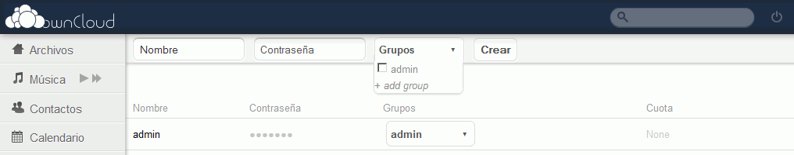
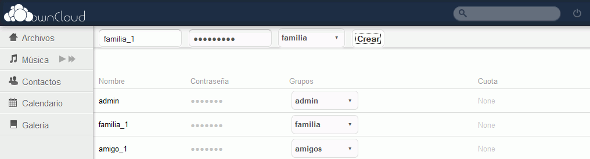
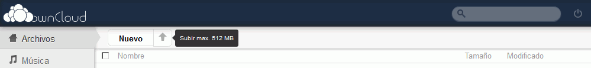
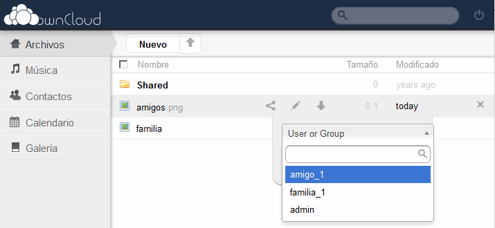
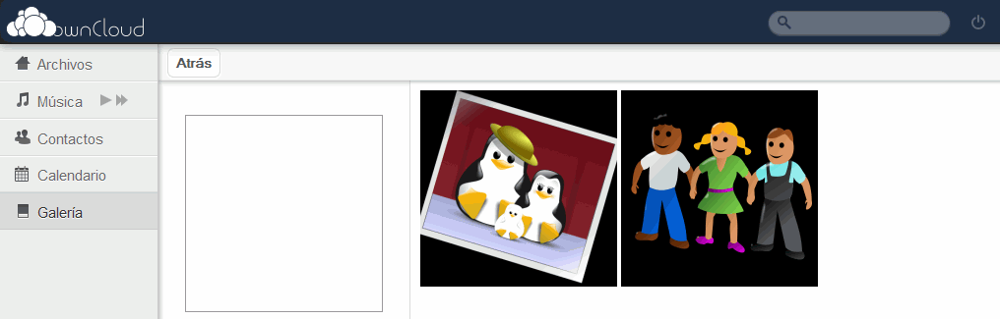
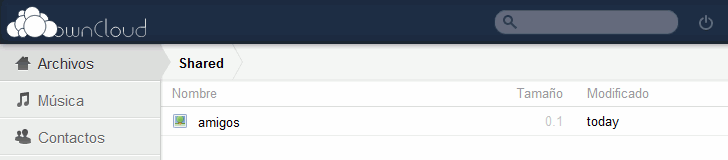
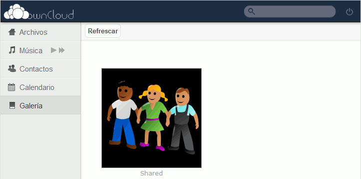

Estos ejercicios corresponden a una versión antigua de ownCloud. No están actualizados a versiones más actuales porque desde el curso 2016/17 no estoy trabajando en clase ownCloud, sino Nextcloud. He mantenido estos ejercicios en los apuntes por si le pueden servir a alguien.
Estas soluciones estaban escritas para la versión 4.5 y están pendientes de actualizar y completar para la versión 8.2.
En esta lección se proponen soluciones detalladas de los ejercicios (2) de ownCloud. Se recomienda intentar realizarlos primero sin recurrir a estas soluciones.
ownCloud (2) 1 - Perfil del administrador
Por escribir
ownCloud (2) 2 - Crear más usuarios y grupos
En este ejercicio se trata de crear dos grupos de usuarios, con un usuario en cada uno de ellos
Entrar en ownCloud como administrador admin y elegir el menú Ajustes > Usuarios. Crear los grupos de usuarios amigos y familia.

Crear dos usuarios que pertenezcan cada uno a un grupo diferente.
nombre: familia_1 ; contraseña: familia_1 ; grupo: familia

Comprobar que se puede entrar en ownCloud como los usuarios amigo_1 y familia_1.
ownCloud (2) 3 - Subir y compartir ficheros
En este ejercicio se trata de subir un par de ficheros y compartirlos con otros usuarios.
Subir a ownCloud un par de imágenes (familia.png y amigos.png ), haciendo clic en Archivos > Subir ():

Compartir cada imagen con el usuario correspondiente (familia.png con familia_1 y amigos.png con amigo_1), haciendo clic en el icono Compartir ( o ):

Comprobar en Galería que las imágenes se ven correctamente:

Entrar en ownCloud como los usuarios amigo_1 y familia_1 y comprobar que pueden acceder a las respectivas imágenes en la carpeta Shared o en la Galería:


ownCloud (2) 4 - Calendario
Por escribir
ownCloud (2) 5 - Crear y compartir archivos de texto
Por escribir
ownCloud (2) 6 - ownCloud Sync Client
Por escribir
ownCloud (2) 7 - Conexión inalámbrica
Por escribir
ownCloud (2) 8 - Aplicaciones: Música
Por escribir
En este ejercicio se trata de subir un par de ficheros y compartirlos con otros usuarios.
{kind=link}
{kind=link}